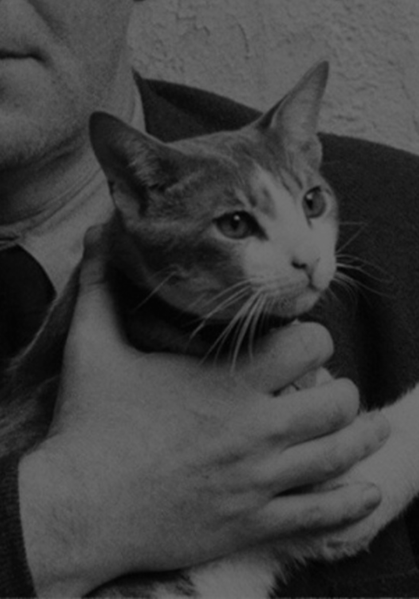

Любовь Иосифа Бродского
к кошкам
Почему Бродский — котик? История
любви поэта к кошкам

26 августа 2023 · биография
Почему Бродский — котик? История
любви поэта к кошкам
Иосиф Бродский любил кошек. Он считал их самыми грациозными созданиями на земле, посвящал им стихотворения, а в телефонных разговорах вместо «до свидания» говорил «мяу».
В автобиографическом эссе «Полторы комнаты» Иосиф Бродский рассказывает о родителях и коммунальной квартире на Литейном проспекте, в которой он жил до своего пятнадцатилетия. Как вспоминает поэт, в его семье близкие часто называли друг-друга «кошачьими» именами. Например, свою мать, Марию Моисеевну, Бродский звал Мася или Киса.
Поэт вспоминает, что с детства у него была особенная манера произношения некоторых слов. Он по-кошачьи растягивал все, что можно было «промяукать», например, слово «мясо».
Позже, когда Бродский женился, «кошачьи» прозвища не ушли из его жизни. Как пишет журналист Петр Вайль, который брал у Бродского интервью и посвятил ему книгу, жена поэта Мария часто кричала: «Эй, коты, идите сюда». Что интересно, откликались оба, и кот, и Иосиф.
Бродский много раз упоминал кошек в стихотворениях. В «Конце прекрасной эпохи» он пишет: «Сам себе наливаю кагор — не кричать же слугу — да чешу котофея». В стихотворении «Самсон, домашний кот» Бродский рассказывает о коте, живущем в центре Петербурга у церкви. В «Слоне и Маруське» противопоставляет кошку Моське из басни Крылова: «Маруська была — не считая ушей — не кошка: краса круглолицая».
После получения Нобелевской премии Иосиф Бродский беседовал с журналистом Томасом Венцлова о русской литературе и об отличиях жизни в Америке и России. Поэт говорил: «Жизнь здесь похожа на жизнь в отечестве во всех деталях, включая кота. Все пятнадцать лет бывал какой-нибудь кот. Приходящий, как правило».
Анна Ахматова для того, чтобы лучше узнать новых знакомых, задавала им три вопроса. Кошки или собаки? Чай или кофе? Пастернак или Мандельштам? Бродский пользовался методом Ахматовой и себя определял, конечно, как «Мандельштам, кошки, кофе».
Поэт мог слегка царапать собеседника ногтями по пиджаку, если человек ему нравился, словно счастливый котенок, который впивается коготками в маму-кошку, чтобы получить больше молока. О кошачьих повадках поэта пишет литературовед Лев Лосев в книге «Меандр». Автор говорит, что детская речевая привычка, которая сохранилась у поэта и во взрослом возрасте, — говорить «такие наши кошачьи дела». Бродский говорил «мяу» в телефонном разговоре вместо «до свидания», а еще мяукал, когда хотел избежать неловких пауз в разговоре. Лев Лосев вспоминает, что был свидетелем звонка, во время которого почти все реплики Иосифа заключались в «мяу» разной окраски, от неопределенного «мяу» до «мяу» возмущенного. Интересно то, что Бродский считал кошек венцом творения. Он говорил, что у кошек не может быть не грациозных поз, а современники вспоминают, что Бродский всегда хорошо получался на фотографиях.
|  | Миссисипи | |
| Ося | ||
| Пасик |